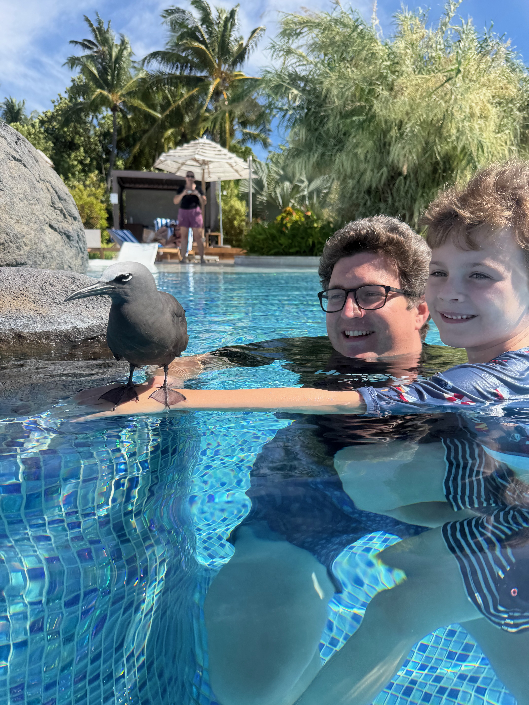

Taylor Dupuy
Associate Professor, Department of Mathematics & Statistics , University of VermontGAATI Laboratory , Université de la Polynésie française.
Office: Innovation E439.Abstract Algebra I , Lafayette L107, MWF 12:00–12:50Fundamentals of Mathematics , Kalkin 001, MWF 9:40–10:30
Before UVM I was a postdoc of
Ehud Hrushovski ,
and a student of Alexandru Buium .
My work tends to revolve around
Diophantine equations ,
differential algebraic geometry ,
deformation theory ,
Witt vectors
and the
Frobenius ,
absolute geometry ,
applied model theory ,
abelian varieties ,
and AI.
I'm happy to talk to anyone about any kind of math; send me an email.
CV
· Papers & notes
· Talks
· Teaching
· YouTube
Riemann Hypothesis Resources
Our notes
Other resources
Alpöge's Statement on the proof of the Riemann Hypothesis.Lean verification of the Riemann Hypothesis — joint statement by the Lean and Mathlib communities, endorsed by the Lean FRO and the Mathlib Initiative.Drew Sutherland's verification page .Elliot Arledge, independent verification receipts — an independent rebuild, axiom audit and nanoda check, on GitHub.
Bartosz Naskręcki, riemann-rev (site ) — a status dashboard recording who has checked what, with a guide to the route of the proof.
A full replay of all 175,187 modules through Lean's kernel , listed on the riemann-rev dashboard as Simon DeDeo's.Alpöge's Lean archive (14 parts, lean.tar.gz.part01–part14).Robin Zhang, A preliminary note on Alpöge's proposed proof of the generalized Riemann hypothesis (Hexagon).
Michael Rubinstein, Alpöge/Claude proof of the Generalized Riemann Hypothesis — an AI-generated explanation of the proof for the Riemann zeta function, with a Lean check.
Brian Kramer, Unpacking Alpöge's Proof of the Riemann Hypothesis (Zenodo preprint) — an exposition written primarily by ChatGPT under Kramer's direction, reverse-engineered from the Lean proof.
Distilling the Generalized Riemann Hypothesis: short guide (GitHub, JoseBrox/GRH_distillation) — an AI-assisted effort to distill Alpöge's Lean proof into a shorter human-readable proof; by the repository's own account the human-readable proof is not yet complete.
AI resources
I have some software for creating natural language proofs, autoformalizing mathematics (based on Chris Birkbeck's repository ), developing Magma packages, maintaining LMFDB databases and webpages, and creating clean LaTeX documents.
Seminars
For students
Past conferences I've organized
Arithmetic Geometry , AMS Western Sectional, Albuquerque, 2021.AGITTOC (Algebraic Geometry in the Time of COVID) lecture series, online, 2020 (shepherd/co-organizer).Abelian Varieties in the LMFDB, Burlington, March 2019 (funded by the UVM CEMS PRSE).
Witt Vectors, Deformations and Absolute Geometry , Burlington, Summer 2018.Sage Days 87: p -adics and LMFDB, Burlington, July 2017.
Super QVNTS workshop on Anabelian Geometry and Kummer Classes , Burlington, Fall 2016.Algebraic Theory of Differential and Functional Equations , JMM, Atlanta, 2016.Arithmetic and Algebraic Differentiation , Berkeley, Summer 2015.Arithmetic and Differential Algebraic Geometry , AMS Western Sectional, Albuquerque, 2014.Witt Vectors, Lifting and Descent , JMM, San Diego, 2013 — slides .
Here is a list of past Witt vector conferences. . I was part of the MSRI (SLMath) semester program on Model Theory, Arithmetic Geometry and Number Theory in Spring 2014.
Links
Regular conferences
Conference lists
Organizations
Notes collections
Computational
Forums & comics
 Supported by the National Science Foundation, DMS-2401570 (Intersection Theory for Differential Equations).
Opinions, findings, and conclusions or recommendations expressed are those of the author and do not necessarily reflect the views of the National Science Foundation or the University of Vermont.
Supported by the National Science Foundation, DMS-2401570 (Intersection Theory for Differential Equations).
Opinions, findings, and conclusions or recommendations expressed are those of the author and do not necessarily reflect the views of the National Science Foundation or the University of Vermont.